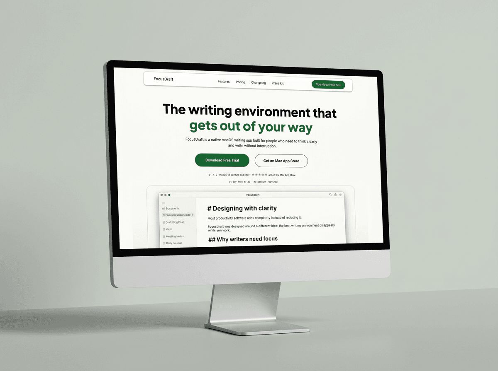
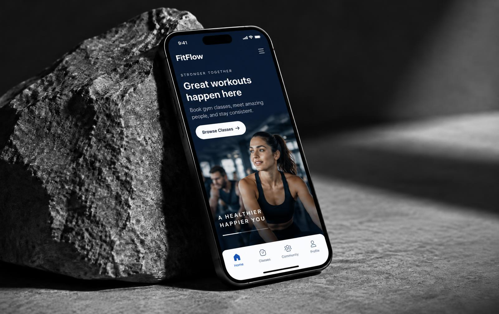
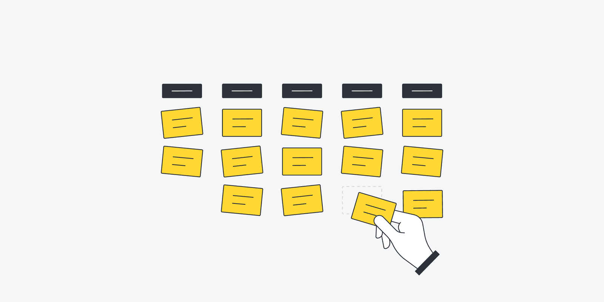
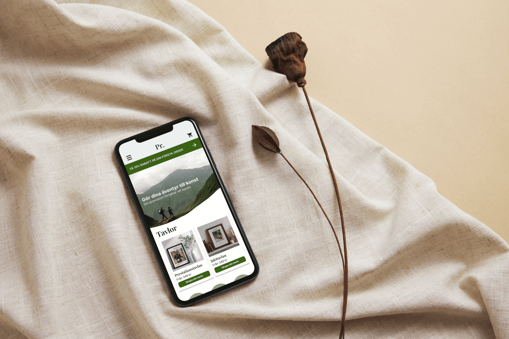
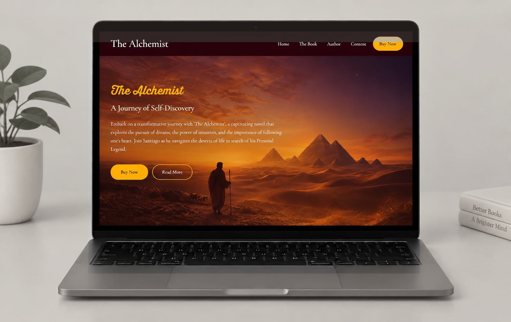

Work
(2025–2026)

Internship
Canopy — UX/UI Design
From mood board to final UI, independently, at WebRay Studio

Independent
FitFlow — Class booking app
A concept booking flow simplified from 6 steps to 3

School
Volo Nordic Hotel — Mobile booking
User testing showed the booking flow was intuitive and easy to follow

Independent
Accessibility Design
An audit and redesign guided by WCAG 2.1 AA

School
Audio Experience — UX Research
3 interviews + survey insights turned into 4 design concepts

School
Prestationsverket — E-commerce redesign
A clearer, more consistent shop that makes purchasing easier

School
The Alchemist — Book website
A mobile-first, hand-coded site with no frameworks